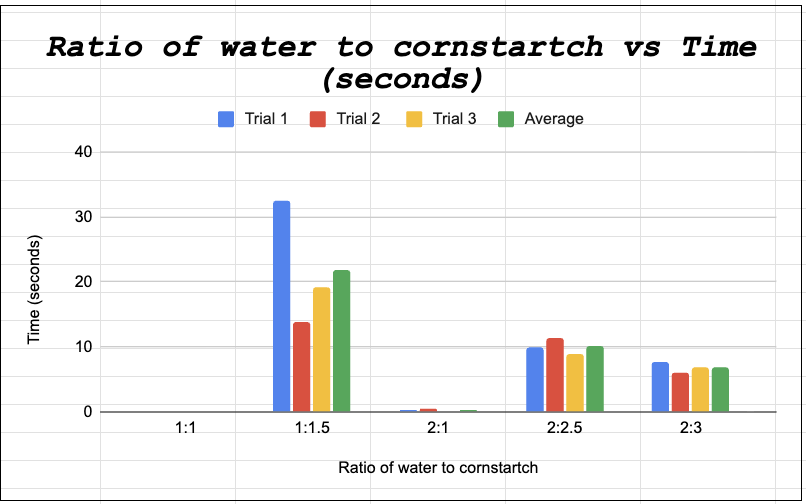
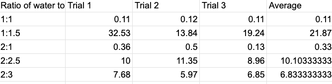

Here are the graphs and a basic caption for all the results


Note: The numbers for 1:1 are so small that it is not visible. We can see that 1:1.5 works the best to stop the projectile for the longest before it inevitably sinks.
We can see that 1:1.5 works the best to stop the projectile for the longest before it inevitably sinks.